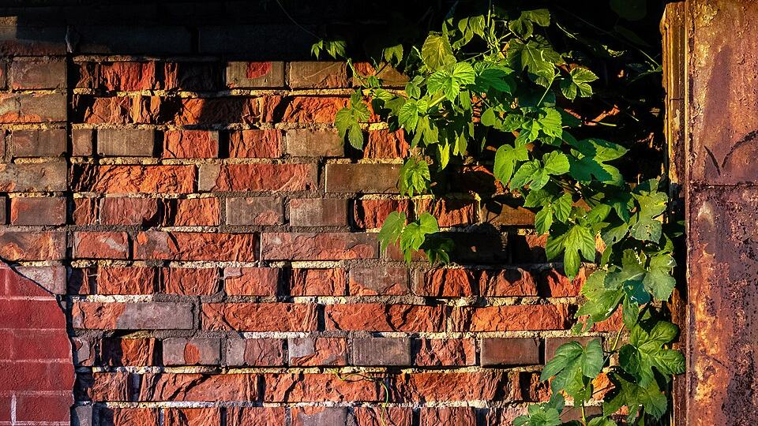

TEKNOFEST 2026 Şanlıurfa'da 30 Eylül'de açılıyor

Görsel: Common hop on former factory wall, Ursus (Warsaw), 2024-07-20 · Radomianin · CC BY-SA 4.0 · Wikimedia Commons
TEKNOFEST'in bu yılki ana buluşması 30 Eylül - 4 Ekim 2026 tarihlerinde Şanlıurfa GAP Havalimanı'nda yapılacak. Beş gün sürecek festivalin girişi ücretsiz, ancak alana girmek için önceden çevrim içi kayıt isteniyor. Yarışma başvuruları ise çoktan kapandı; bu ayrım, ilk kez gidecekler için en çok karıştırılan nokta.
TEKNOFEST 2026 ne zaman ve nerede yapılıyor?
Festival alanı Şanlıurfa GAP Havalimanı. Giriş ve çıkışlar her gün 09.00-20.00 arasında yapılabiliyor. Etkinlik Sanayi ve Teknoloji Bakanlığı ile Türkiye Teknoloji Takımı Vakfı yürütücülüğünde düzenleniyor ve serinin 14. ayağı olarak duyuruldu.
Havalimanı şehir merkezine 35-40 kilometre uzaklıkta. Aksiyon'un aktardığına göre bir milyonun üzerinde ziyaretçi bekleniyor ve yolcu taşımacılığı Milli Eğitim Bakanlığı ile T3 Vakfı koordinasyonunda yürütülüyor. Servis saatleri ve güzergâhlar valilik duyurularından takip edilmeli.
Aynı habere göre alan için yaklaşık 7,5 kilometre uzaktan içme suyu hattı çekildi ve havalimanı çevresinde 136 bin metrekarelik sıcak asfalt çalışması yapıldı. Otellerin yanı sıra kamu kurum misafirhanelerinin de büyük ölçüde dolması bekleniyor.
TEKNOFEST 2026 girişi ücretsiz mi, kayıt nasıl yapılıyor?
Giriş ücretsiz. Yine de alana girmek için çevrim içi ziyaretçi kaydı gerekiyor ve kayıt NSosyal hesabıyla tamamlanıyor. Gelecek her kişi için ayrı bilet oluşturuluyor; 7 yaşından küçük çocuklar için kayıt aranmıyor.
Kaydı kapıda yapmayı planlamak riskli. Hesap açma ve doğrulama adımı internet bağlantısı istiyor, kalabalık günde sahada bu adım uzayabiliyor. Biletleri evden çıkmadan telefona indirmek en pratik yol.
TEKNOFEST 2026'da yarışmacı olmakla ziyaretçi olmak arasında ne fark var?
İki ayrı kanal var. Yarışmalar 61 ana ve 143 alt kategoride düzenleniyor, ancak başvuru dönemi aylar önce kapandı; teknofest.org'daki yarışma sayfalarında başvurular tamamlandı olarak görünüyor. Yani 30 Eylül'de gidip yarışmaya kaydolmak mümkün değil.
Ziyaretçi kaydı ise ayrı bir işlem ve açık. Alanı gezmek, atölyelere katılmak, sergileri ve finalleri izlemek için bu kayıt yeterli. Takımların yarışma finallerini tribünden seyretmek de ziyaretçi biletiyle oluyor.
Yarışmalar ilkokuldan lisansüstüne, mezun ve girişim kategorilerinden uluslararası katılıma kadar ayrı gruplara bölünmüş durumda. Temalar arasında yapay zekâ ve veri teknolojileri, insansız hava sistemleri, robotik ve otonom sistemler, roket, sağlık teknolojileri ve deniz araçları başlıkları bulunuyor.
TEKNOFEST 2026'yı ilk kez gezecekler günü nasıl planlamalı?
Mantık şu: sabit saatli olanı önce, gün boyu açık olanı sonra yazın. Gösteri uçuşları ve sahne programı belirli saatlerde; sergi alanları, simülasyonlar ve atölyeler ise gün boyunca açık. Önce sabit saatleri listeleyip aralara gezmeyi sıkıştırmak alanda koşturmayı azaltıyor.
Şanlıurfa ayağının gösteri listesi TEKNOFEST'in gösteriler sayfasında henüz yayımlanmadı; sayfa hâlâ bir önceki festivalin ekiplerini gösteriyor. Geçen yılın saatlerine güvenerek yola çıkmak, uçuşu kaçırmanın en kolay yolu. Program her gün resmi sayfadan doğrulanmalı.
Alanın bir havalimanı olduğunu da hesaba katmak gerekiyor: mesafeler uzun, gölge sınırlı. Giriş 09.00'da açıldığı için sabah saatleri hem kuyruk hem sıcak açısından en rahat aralık. Kalabalığın yoğunlaştığı hafta sonu için erken çıkmak mantıklı.
“Katılımın ücretsiz olduğu festivalde yerinizi almak için hemen çevrim içi kayıt yaptırabilirsiniz.”
— TEKNOFEST duyurusu, Star, 22 Eylül 2026
Takip etmek için
- teknofest.org: yarışma takvimi, gösteri programı ve alan duyuruları burada güncelleniyor.
- TEKNOFEST Güneydoğu ziyaretçi kayıt sayfası (mth.tc/TEKNOFESTGUNEYDOGU2026): bilet buradan oluşturuluyor.
- Şanlıurfa Valiliği ve Şanlıurfa Büyükşehir Belediyesi duyuruları: ulaşım, servis ve trafik düzenlemeleri.
Sık sorulan sorular
TEKNOFEST 2026 hangi saatlerde geziliyor?
Alana giriş ve çıkışlar 30 Eylül - 4 Ekim arasında her gün 09.00 ile 20.00 saatleri arasında yapılabiliyor.
Çocuklar için bilet gerekiyor mu?
7 yaşından küçük çocuklar için kayıt istenmiyor. Bu yaşın üzerindeki her ziyaretçi için ayrı bilet oluşturulması gerekiyor.
Gösteri uçuşlarının saatleri belli mi?
Şanlıurfa ayağı için gösteri programı henüz açıklanmadı. Resmi gösteriler sayfası şu an bir önceki festivalin ekiplerini listeliyor. Saatler teknofest.org üzerinden duyurulacak.
Olgular şu yayıncıların haberlerinden derlendi: TEKNOFEST (teknofest.org), Star, Türkiye Gazetesi, Milli Gazete. Metnin tamamı TrendSaphiens tarafından yazıldı; kaynaklarla kelime örtüşmesi %0.0 (eşik %5). Kaynaklarda olmayan bilgi eklenmedi.